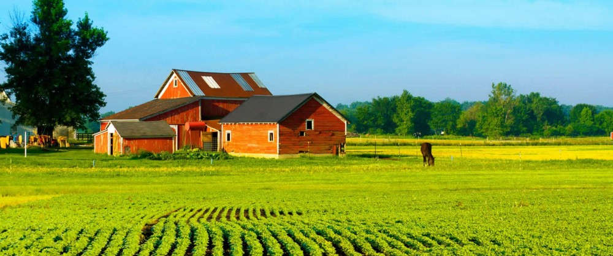
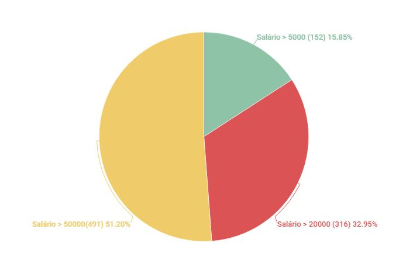
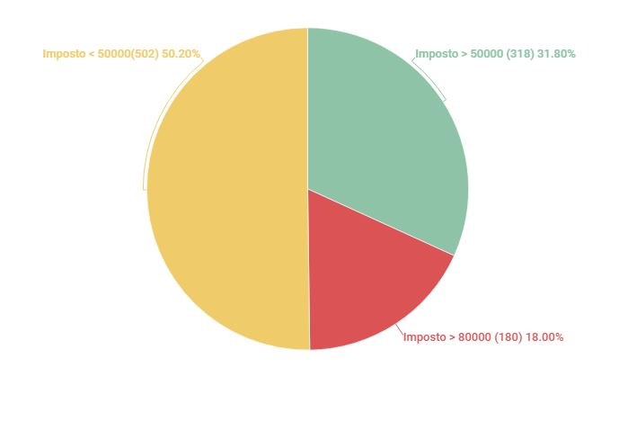

Conheça os principais dados sobre Imóveis Rurais no Brasil

Estatísticas sobre os salários dos funcionários
Número total de funcionários cadastrados: 1000
Média salarial: R$ 50.272,90

Estatísticas sobre o pagamento de imposto das propriedades
Número total de Imóveis cadastrados: 1000
Imposto mais alto pertence a uma propriedade é em Anápolis, no valor de R$ 99.967,00 ao mês
